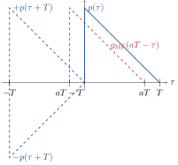

Chapter 4 Detection of Baseband Signals in Noise
4.1 Additive White Gaussian Noise (AWGN) Channel
In case of a Additive White Gaussian Noise (AWGN, German: additives, weiss’sches Gauß’sches Rauschen) channel, the receive signal \(r(t)/\sqrt{\mathrm{W}}\in\mathbb{R}\) (German: Empfangssignal) can be written as (see also Figure 4.1) \[r(t) = s(t) + n(t),\] with the transmit signal \(s(t)/\sqrt{\mathrm{W}}\in\mathbb{R}\) as defined in Section 3.2 and the additive noise signal \(n(t)/\sqrt{\mathrm{W}}\in\mathbb{R}\) (German: Rauschssignal) being a white real-valued zero-mean Gaussian (or normal) distributed random process. See Appendix E.4.7 and the succeeding Appendices for more details on random processes.
Figure 4.1: Block diagram of AWGN channel
Note that in a real system, the noise is not added “in the air” as might be concluded from the channel model depicted in Figure 4.1, but by noisy components in the receiver, e.g., by noisy resistors. Therefore, \(r(t)\) is in fact not the signal at the input of the receiver but a signal somewhere within the receiver. However, one can consider \(r(t)\) as the signal at the input of an imaginary noiseless receiver, i.e., where all the noise of the real receiver has been summarised by \(n(t)\) and added before reception.
4.1.1 White Gaussian Noise
In this subsection, we take a closer look of the white Gaussian noise \(n(t)\).
Definition 4.1 (White Gaussian Noise) The signal \(n(t)/\sqrt{\mathrm{W}}\in\mathbb{R}\) is denoted as white Gaussian noise if
for each \(t/\mathrm{s}\in\mathbb{R}\), the value \(n(t)\) is zero-mean Gaussian (or normal) distributed (cf. Definition E.7), i.e., \(n\sim {\cal N}(0,\sigma_n^2)\) with the variance \(\sigma_n^2\) and
at two different time instances \(t/\mathrm{s}\), \((t+\tau)/\mathrm{s}\in\mathbb{R}\), \(\tau\neq 0\), the corresponding values \(n(t)\) and \(n(t+\tau)\) are uncorrelated, i.e., the auto-correlation function \(\varphi_n(\tau)=\frac{N_0}{2}\delta(\tau)\) (cf. Appendix E.4.10) or the power spectral density \(\Phi_n(f) = \frac{N_0}{2}\leftrightarrow\varphi_n(\tau)\) (cf. Appendix E.4.11).30
The term “white” refers to the fact that the power spectral density \(\Phi_n(f)\) of the noise signal \(n(t)\) is flat, i.e., all frequencies or “colors” have the same power density, leading to a “white” mixture.
It remains the question, why the constant value of the power density spectrum \(\Phi_n(f)\) is \(N_0/2\) and not \(N_0\). If the noise signal \(n(t)\) is not band-limited, the corresponding noise power is not defined (cf. Appendix E.4.11), i.e., \[P_n = \int\limits_{-\infty}^\infty \Phi_n(f) df = \int\limits_{-\infty}^\infty \frac{N_0}{2} df \to \infty.\] Clearly, this case is not realistic anyway because all physical systems are band-limited (see, e.g., Example 1.3). In case of a baseband system with the bandwidth \(B=f_\mathrm{max}\) (cf. Definition 2.1), the noise power computes as \[P_n = \int\limits_{-B}^B \Phi_n(f) df = \int\limits_{-B}^B \frac{N_0}{2} df =N_0 B,\] and in case of a passband system with the center frequency \(f_0\) and the bandwdith \(B=f_\mathrm{max}-f_\mathrm{min}\) (cf. Definition 2.4) to \[\begin{aligned} P_n &= \int\limits_{-f_0-B/2}^{-f_0+B/2} \Phi_n(f) df + \int\limits_{f_0-B/2}^{f_0+B/2} \Phi_n(f) df\\ &= 2\int\limits_{f_0-B/2}^{f_0+B/2} \frac{N_0}{2} df= N_0 B. \end{aligned}\] So, the factor 1/2 is necessary to end up with a noise power of \(P_n=N_0 B\) in all considered cases, i.e., baseband and passband systems. Otherwise, the noise power would be \(2N_0B\) because of the fact that real-valued signals have a symmetric spectrum, i.e., a spectrum with positive and negative frequency components and the noise power is distributed among these positive and negative frequencies.
In most of the cases, the cause of the noise signal are thermal movements of charges, also known as the Brownian motion (German: Brown’sche Molekularbewegung) as depicted in Figure 4.2. This type of noise is also denoted as thermal noise (German: thermisches Rauschen) and the noise power density reads as \[N_0=k T_0,\] with the absolute temperature \(T_0\) in Kelvin, i..e, \([T_0]=1\,\mathrm{K}\), and the Boltzmann constant \(k\approx 1.3806503\cdot 10^{-23}\,\mathrm{Ws}/\mathrm{K}\).
Figure 4.2: Brownian motion of plastic particles in water (Source: Jkrieger am Deutschen Krebsforschungszentrum in der Arbeitsgruppe B040 Biophysik der Makromoleküle - Eigenes Werk, CC BY-SA 3.0, Link)
4.1.2 Signal-to-Noise Power Ratio
The performance of communications systems cannot be determined solely based on the noise power. The signal power is additionally needed and precisely, the performance depends on the ratio of the signal to the noise power defined as follows (similar to the SNR \(\gamma_\mathrm{q}\) in Definition 2.7).31
If \(s(t)\) is deterministic, the signal power computes to32 \[P_s=\lim_{T\to\infty}\frac{1}{2T}\int\limits_{-T}^{T}|s(t)|^2dt,\] and if \(s(t)\) is stochastic to \[P_s=\sigma_s^2=E\left[|s|^2\right] = \int\limits_{-\infty}^\infty |s|^2 f_s(s)ds.\]
In some cases, the signal power is also defined as an instantaneous power (German: Momentanleistung) at a certain time instance \(t=t_0\), i.e., \[P_s=|s(t_0)|^2.\]
Since the noise power is per se stochastic, it computes to \[P_n=\sigma_n^2=E\left[|n|^2\right] = \int\limits_{-\infty}^\infty |n|^2 f_n(n)dn.\]
4.1.3 Noise Figure
Here, we consider an amplifier (German: Verstärker) as a typical receiver component and its effects on the noise power. Assume that there is a noise signal with power \(P_n\) at the input of the amplifier, e.g., generated by preceding receiver components. If the amplifier has the amplification factor \(a\) (German: Verstärkungsfaktor) and an internal noise (German: Eigenrauschen) source with the power \(P_{n,\mathrm{i}}\), the noise power at the output computes to \[P_{n}^\prime=aP_n+P_{n,\mathrm{i}}.\] Figure 4.3 summarises the noise powers at the considered amplifier.
Figure 4.3: Noise powers at an amplifier with an internal noise source
With the consideration of an additional signal power \(P_s\), the noise figure influences also the SNR at the input and output of the system component. It holds the following theorem.
In words, when processed by a system component with the noise figure \(F_\mathrm{dB}\) in dB, the SNR in dB of the corresponding signals is reduced by \(F_\mathrm{dB}\) due to the additional noise of the internal noise source.
Exercise 4.1 (AWGN) The signal \(s(t)\) is superposed by additive white Gaussian noise \(n(t)\) with the power density spectrum \(\Phi_n(f) = N_0/2\). The noisy signal is filtered by an ideal passband filter with the center frequency (German: Mittenfrequenz) \(f_0=100\,\mathrm{kHz}\) and the bandwidth \(B=3\,\mathrm{kHz}\). We measure the signal power at the output of the filter. If \(s(t)\) is sinusoidal with amplitude \(\hat{s}\) and frequency \(f_1=100\,\mathrm{kHz}\), we measure a power of \(P_1=1\,\mathrm{mW}\). Changing the center frequency of the passband filter such that the sinusoidal signal lies outside the passband, reduces the power to \(P_2=0.2\,\mathrm{mW}\).
- Compute the noise power density \(N_0\).
- Compute the SNR \(P_s/P_n\) of the first measurement. What is the value \(10\lg (P_s/P_n)\) in dB?
- Finally, compute the amplitude \(\hat{s}\) of the signal \(s(t)\).
- \(P_2 = \frac{N_0}{2}2B = N_0 B = P_n\)
\(\Rightarrow N_0 = \frac{P_2}{B} = \frac{0.2\,\mathrm{mW}}{3\,\mathrm{kHz}} \approx 66.7\,\frac{\text{nW}}{\text{Hz}}\) - \(\frac{P_s}{P_n} = \frac{P_1}{P_n} - 1 = \frac{P_1}{P_2} - 1 = \frac{1\,\mathrm{mW}}{0.2\,\mathrm{mW}} - 1 = 4\ (P_1=P_s+P_n)\)
\(10\lg\frac{P_s}{P_n} = 10\lg 4 \approx 6\,\mathrm{dB}\) - \(P_s = \frac{1}{T}\int_0^T \hat{s}^2 \cos^2 (2\pi f_0 t) dt = \frac{\hat{s}^2}{T}\cdot \frac{T}{2} = \frac{\hat{s}^2}{2}\)
\(\frac{\hat{s}^2}{2}=P_1-P_2\ \Rightarrow\ \hat{s} = \sqrt{2(P_1-P_2)} = \sqrt{2\cdot 0.8\,\mathrm{mW}} = 0.04 \sqrt{W}\)
4.2 Baseband Receiver for Detection
Before deriving an optimal receive filter in the next section, we briefly review the baseband receiver (German: Basisbandempfänger) for detection (German: Detektion) . Figure 4.4 depicts the corresponding block diagram for detection of a transmit signal in a baseband with polar symbol mapping, i.e., \(d[\ell]\in\{-D,D\}\), and causal time-limited pulse shaping, i.e., \(p(t)=0\) for \(t\neq [0,T]\).
Figure 4.4: Block diagram of a baseband receiver for a transmit signal with polar symbol mapping and causal time-limited pulse shaping
After application of the receive filter \(g(t)\) (German: Empfangsfilter) to the receive signal \(r(t)\), i.e., \[y(t)=g(t)*r(t),\] the resulting signal \(y(t)\) is sampled with the symbol duration \(T\) according to \[y[\ell]=y(\ell T + T).\] As will be seen in the next section, it is important to sample at the end of a symbol period, i.e., at \(t=\ell T+ T\) in order to collect all available energy of \(d[\ell]\) which \(r(t)\) contains in the time interval \([\ell T, \ell T + T]\).
Finally, based on \(y[\ell]\), the data symbols \(d[\ell]\) are detected by applying a decision (German: Entscheider), i.e., the signum function (cf. Appendix D.3). Mathematically speaking, the detected symbols (German: detektierte Symbole) are obtained via33 \[\tilde{d}[\ell]=\mathrm{sgn}(y[\ell])D\in\{-D,D\}.\]
Although we assume analog receive filters in this textbook, they can be also implemented as digital filters. In thise case, analog-to-digital conversion, including sampling with a sample rate greater than the symbol rate, is applied before filtering.
4.3 Matched Filter
After applying a receive filter \(g(t)\) to the receive signal \(r(t)\), the output \(y(t)\) of this receive filter can be written as \[\begin{aligned} y(t)&=g(t)*r(t)=g(t)*(s(t)+n(t))=\\ &=\underbrace{g(t)*s(t)}_{=:y_s(t)}+\underbrace{g(t)*n(t)}_{=:y_n(t)}, \end{aligned}\] where \(y_s(t)=g(t)*s(t)\) is the filtered noiseless signal and \(y_n(t)=g(t)*n(t)\) is the filtered noise signal.
4.3.1 Maximizing SNR
The Matched Filter (MF, German: signalangepasste Filter) is the receive filter which maximises the SNR at its output, i.e., of the sampled receive signal. Without loss of generality, we consider only the first transmitted symbol/bit in the time period \(t\in[0,T]\), i.e., \(\ell=0\).34 As already mentioned above, in order to be able to collect all symbol energy in this time period, we sample at its end, i.e., we choose \(t=T\). In this case, the SNR at the output of the receive filter computes as \[ \gamma_{g} = \frac{P_{y_s}}{P_{y_n}}= \frac{|y_s(T)|^2} {\mathrm{E}\left[|y_n(t)|^2\right]},\] and the MF maximises the SNR \(\gamma_g\), i.e., \[g_\mathrm{MF}(t)=\mathop{\mathrm{argmax}}\limits_{g(t)} \gamma_g.\]
Let us first consider the power \(P_{y_s}\) of the filtered noiseless signal \(y_s(t)\) at the time instance \(t=T\). With Equation (3.1) in Section 3.2 and the fact that \(d[\ell]\in\{-D,D\}\) in case of polar symbol mapping, it holds \[\begin{aligned} y_s(t)&=g(t)*s(t)\\ &=g(t)* T\sum_{\ell=-\infty}^\infty d[\ell] p(t-\ell T)\\ &=\pm DT \sum_{\ell=-\infty}^\infty g(t) * p(t-\ell T), \end{aligned}\] and for \(t=T\) and \(\ell=0\) (cf. Definition E.3 of convolution)35 \[\begin{aligned} y_s(T)&=\pm DT (g(t) * p(t))|_{t=T}\\ &=\pm DT \int\limits_{-\infty}^\infty g(\tau)p^*(T-\tau) d\tau. \end{aligned}\] Then, the instantaneous power \(P_{y_s}\) yields \[P_{y_s}=|y_s(T)|^2=D^2T^2\left|\int\limits_{-\infty}^\infty g(\tau)p^*(T-\tau) d\tau\right|^2.\]
Next, we compute the power \(P_{y_n}\) of the filtered noise signal \(y_n(t)\). Based on the power spectral density \(\Phi_n(f)=N_0/2\) and Equation (E.7) of Appendix E.4.11, we get \[P_{y_n}=\int\limits_{-\infty}^\infty \Phi_n(f)|G(f)|^2 df =\frac{N_0}{2} \int\limits_{-\infty}^\infty |G(f)|^2 df.\] With Parseval’s theorem36 \[\int_{-\infty}^\infty |G(f)|^2 df=\int_{-\infty}^\infty |g(t)|^2 dt,\] it follows \[\begin{equation} P_{y_n}=\frac{N_0}{2} \int\limits_{-\infty}^\infty |g(t)|^2 dt, \tag{4.1} \end{equation}\] and the SNR at the output of the receive filter reads as \[\gamma_g=\frac{P_{y_s}}{P_{y_n}}= \frac{D^2T^2\left|\int\limits_{-\infty}^\infty g(\tau)p^*(T-\tau) d\tau\right|^2} {\frac{N_0}{2} \int\limits_{-\infty}^\infty |g(t)|^2 dt}.\] The Cauchy-Schwarz inequality37 tells us an upper bound of \(\gamma_g\) according to \[\begin{aligned} \gamma_g=\frac{P_{y_s}}{P_{y_n}}&\leq \frac{D^2T^2 \int\limits_{-\infty}^\infty |g(t)|^2 dt \int\limits_{-\infty}^\infty |p^*(T-t)|^2 dt }{\frac{N_0}{2} \int\limits_{-\infty}^\infty |g(t)|^2 dt}\\ &=\frac{2D^2T^2}{N_0}\int\limits_{-\infty}^\infty |p^*(T-t)|^2 dt, \end{aligned}\] where we substituted \(\tau\) by \(t\) and where equality holds for \(g(t)=\beta p^*(T-t)\). In words, the SNR \(\gamma_g\) is always smaller than or equal to this upper bound. Thus, the upper bound itself is the maximum of the SNR which is reached by choosing the matched filter \(g_\mathrm{MF}(t)=\beta p^*(T-t)\) as the receive filter.
With the normalisation of the pulse shaping filter \(p(t)\) as introduced in Equation (3.3) of Section 3.2, i.e.,38 \[\int\limits_{-\infty}^\infty |p^*(T-t)|^2 dt=\int\limits_{-\infty}^\infty |p(t)|^2 dt=\frac{1}{T},\] and the symbol energy \(E_s=D^2T\) from Theorem 3.1, the SNR at the output of the MF reads as \[\begin{equation} \gamma_{g_\mathrm{MF}}=\frac{2D^2T^2}{N_0}\cdot\frac{1}{T}= \frac{2 D^2 T}{N_0}=\frac{2 E_s}{N_0}. \tag{4.2} \end{equation}\]
Note that \(g_\mathrm{MF}(t)=\beta p(T-t)\) in case of real-valued pulse shaping filters. In words, the MF \(g_\mathrm{MF}(t)\) is the pulse shaping filter \(p(t)\) reflected across the line at \(t=T/2\) and weighted with \(\beta\).
Figure 4.5: Triangular pulse shaping filter \(p(t)\)
Figure 4.6: MF \(g_\mathrm{MF}(t)\) of the triangular pulse shaping filter \(p(t)\)
4.3.2 Frequency-Selective Channel
A more general channel compared to the AWGN channel is depicted in Figure 4.7 where a channel impulse response \(h(t)\) is present before the noise signal is added. This channel type is called a frequency-selective channel (German: frequenzselektiver Kanal) or mulitpath channel (German: Mehrwegekanal). The AWGN channel is a special case thereof with the impulse response \(h(t)=\delta(t)\) \(\leftrightarrow\) \(H(f)=1\). Since all frequencies are weighted with one in this case, the AWGN channel is also denoted as a frequency-flat channel (German: frequenzflacher Kanal). In case of a frequency-selective channel, \(h(t)\neq \delta(t)\).
Figure 4.7: Block diagram of frequency-selective channel
Considering a frequency-selective channel, it is not sufficient to solely match the receive filter \(g(t)\) to the pulse shaping filter \(p(t)\). The channel impulse response \(h(t)\) must be considered additionally. This is done by combining \(h(t)\) and \(p(t)\) to a total pulse shaping filter \[p_\mathrm{tot}(t)=h(t)*p(t),\] of duration \(T_\mathrm{tot}\), i.e., \(p_\mathrm{tot}=0\) for \(t\neq [0,T_\mathrm{tot}]\). If \(p(t)\) has duration \(T\) and \(h(t)\) duration \(T_h\), then \(T_\mathrm{tot}=T+T_h\). Using the total pulse shaping filter \(p_\mathrm{tot}(t)\) instead of \(p(t)\) for the derivation of the MF, the resulting channel is again purely AWGN and the MF computes to \[g_\mathrm{MF}(t)=\beta p_\mathrm{tot}^*(T_\mathrm{tot}-t).\] Note that in this case, the output signal \(y(t)\) of the MF needs to be sampled at \(t=\ell T + T_\mathrm{tot}\) to collect all symbol energy in the receive signal within the time interval \([\ell T, \ell T + T_\mathrm{tot}]\).
Figure 4.8: Total pulse shaping filter \(p_\mathrm{tot}(t)\)
Figure 4.9: MF \(g_\mathrm{MF}(t)\) of the total pulse shaping filter \(p_\mathrm{tot}(t)\)
Due to the fact, that the duration \(T_\mathrm{tot}\) of the total pulse shaping filter is larger than the symbol duration \(T\), i.e., \(T_\mathrm{tot}>T\), the first Nyquist criterion is not fulfilled, resulting in severe ISI (see Section 3.4). Thus, in case of freqency-selective channels, maximizing the SNR is not the right figure of merit because the signal power contains the power of the signal of interest as well as the one of the interference, i.e., there is no distinction between both of them. Alternative receive filters are either forcing the unwanted interference completely to zero, resulting in the so-called Zero-Forcing (ZF) filter, or minimizing the mean squared error, resulting in the so-called Wiener Filter (WF). Since the focus of this lecture lies on AWGN channels, these two filters are not discussed any further. However, these filters are usually implemented by a MF as derived in this section, followed by a digital filter operating on the sampled signal \(y[\ell]\).
4.3.3 Root-Raised-Cosine Filter
One problem of applying a MF at the receiver for maximizing the SNR at its output, is that, in general, the first Nyquist criterion (cf. Section 3.4) is only fulfilled at its input but no longer at its output. This is especially true for the raised-cosine filter. The reason for this lies in the fact that the pulse shaping filter is applied twice, once originally and the second time by the MF as a reflected version thereof. The combination of the MF and the pulse shaping filter yields40 \[g_\mathrm{MF}(t)*p(t)=\beta p^*(-t)*p(t),\] with the corresponding spectrum \[G_\mathrm{MF}(f)P(f)=\beta |P(f)|^2,\] no longer following Theorem 3.2. In order to avoid this problem, a pulse shaping filter with a spectrum being the square-root of the original spectrum is applied. We demonstrate this approach for the practically most relevant filter, i.e., the raised-cosine filter (see Subsection 3.2.4), leading to the so-called root-raised-cosine filter.
Figure 4.10: Impulse response \(p_\mathrm{RRC}(t)\) and the corresponding frequency response \(P_\mathrm{RRC}(f)\) of the Root-Raised-Cosine (RRC) filter compared to the impulse response \(p_\mathrm{RC}(t)\) and the corresponding frequency response \(P_\mathrm{RC}(f)\) of the Raised-Cosine (RC) filter, both with \(\alpha=0.5\)
So far, we have only considered the symmetric and non-causal root-raised-cosine filter. Similar to the derivations in Section 3.2, a causal version can be obtained by windowing to the time interval \([-NT,NT]\), \(N\in\mathbb{N}\), and applying a time translation of \(NT\) to the right. The resulting causal root-raised-cosine filter reads as \[p_+(t) = p(t-NT) \mathrm{rect}\left(\frac{t-NT}{2NT}\right)\] \[\updownarrow\] \[\begin{aligned}P_+(f) &= P(f)*2NT\mathrm{sinc}(2NTf)e^{-j2\pi f NT}. \end{aligned}\] The MF in this case computes to \[g_\mathrm{MF}(t)=\beta p^*(2NT-t),\] which is \(p(t)\) reflected accross the line \(t=NT\). The output \(y(t)=g_\mathrm{MF}(t)*r(t)\) has then to be sampled at the time instances \(t=\ell T + 2NT\).
4.4 Bit Error Probability (BEP)
In this section, we derive the Bit Error Probability \(P_\mathrm{BE}\) (BEP, German: Bitfehlerwahrscheinlichkeit) , i.e., the probability that one bit gets erroneous during transmission. To do so, we assume baseband communications with polar symbol mapping, pulse shaping with a filter fulfilling the first Nyquist criterion, in the following briefly denoted as Nyquist pulse shaping (German: Nyquist-Impulsformung), and matched filtering at the receiver. Moreover, we assume perfect clock and frame synchronisation, i.e., the output signal of the MF is precisely sampled at multiples of the symbol duration and the position of the first transmitted bit is perfectly known. Some details on clock and frame synchronisation in real systems are discussed in Section 4.5.
Without loss of generality, we consider only the first bit \(u[0]\) which corresponds to the input \(y[0]\) at the decision in Figure 4.4. Remember that the sampled value \(y[0]\) includes a delay which depends on the type of pulse shaping filter, i.e., if it is time-limited or not, and on the type of channel, i.e., if it is frequency-selective or not (see discussions in Section 4.3). Besides, since the factor \(\beta\) of the MF has no influence on the SNR at its output, we assume \(\beta=1\) for simplicity, i.e., \(y[0]=\pm D\) with the power \(P_{y_s}=D^2\) and the noise power at the output of the MF computes as \(P_{y_n}=\sigma_{y_n}^2=N_0/(2T)\) (see Equation (4.2)).
Figure 4.11 shows the conditional PDFs \(f_y(y[0]|u[0]=0)\) and \(f_y(y[0]|u[0]=1)\), respectively, i.e., the PDFs of the received sample \(y[0]\) if \(u[0]=1\) and \(u[0]=0\), respectively, has been transmitted. Remember that in case of polar symbol mapping \(d[0]=+D\) if \(u[0]=0\) and \(d[0]=-D\) if \(u[0]=1\) (cf. Section 3.1).
Figure 4.11: Conditional PDFs of the received sample \(y[0]\) if a \(u[0]=1\) or a \(u[0]=0\) has been transmitted (\(\beta=1\))
A bit error occurs, if \(y[0]<0\) and \(u[0]=0\) (\(d[0]=+D\)) or if \(y[0]>0\) and \(u[0]=1\) (\(d[0]=-D\)) has been transmitted. The probability for this event computes as \[\begin{aligned} P_\mathrm{BE}&=P(u[0]=0)\underbrace{P(y[0]<0|u[0]=0)}_{=:P_{b,0}}\\ &\phantom{=}+ P(u[0]=1)\underbrace{P(y[0]>0|u[0]=1)}_{=:P_{b,1}}\\ &=P(u[0]=0) \underbrace{\int\limits_{-\infty}^0 p(y[0]|u[0]=0)dy[0]}_{=:P_{b,0}}\\ &\phantom{=}+P(u[0]=1) \underbrace{\int\limits_{0}^\infty p(y[0]|u[0]=1)dy[0]}_{=:P_{b,1}}, \end{aligned}\] with the probabilities \(P(u[0]=0)\) that a “0” and \(P(u[0]=1)\) that a “1” has been sent. In the following, we assume that both bits are equiprobable, i.e., \[P(u[0]=0)=P(u[0]=1)=\frac{1}{2},\] which is quite realistic if source coding (German: Quellencodierung) is performed at the transmitter since a well-designed source coder results in equiprobable bits at its output. However, in this textbook, we do not consider source coding.
Together with Definition E.7 of the Gaussian distribution and Definition D.4 of the complimentary error function, the BEP simplifies to \[\begin{aligned} P_\mathrm{BE}&=2\cdot \frac{1}{2} \int\limits_{-\infty}^0 p(y[0]|u[0]=0)dy[0]\\ &=\int\limits_{-\infty}^0\frac{1}{\sigma_{y_n}\sqrt{2\pi}} e^{ -\frac{\left(y[0]-D\right)^2}{2\sigma_{y_n}^2}}dy[0]\\ &= \frac{1}{\sqrt{\pi}} \int\limits_{\frac{D}{\sigma_{y_n}\sqrt{2}}}^\infty e^{-z^2}dz= \frac{1}{2}\mathrm{erfc}\left(\frac{D}{\sigma_{y_n}\sqrt{2}}\right), \end{aligned}\] where we substituted \((D-y[0])/(\sigma_{y_n}\sqrt{2})\) by \(z\) and consequently, \(dy[0]\) by \(-\sigma_{y_n}\sqrt{2} dz\).42
Since we are especially interested in the dependency of the BEP on the SNR, it remains to express the argument of the complimentary error function by the SNR. It holds (with the symbol energy \(E_s\) from Theorem 3.1) \[\gamma_{g_\mathrm{MF}}=\frac{P_{y_s}}{P_{y_n}}= \frac{D^2}{\sigma_{y_n}^2}= \frac{2D^2T}{N_0}=\frac{2E_s}{N_0}=\frac{2E_b}{N_0},\] and \[\frac{D}{\sigma_{y_n}\sqrt{2}}= \sqrt{\frac{\gamma_{g_\mathrm{MF}}}{2}}=\sqrt{\frac{E_s}{N_0}}=\sqrt{\frac{E_b}{N_0}},\] where we introduced additionally the bit energy \(E_b\) (German: Bitenergie) which is equal to the symbol energy, i.e., \(E_b=E_s\), in case of polar symbol mapping because one symbol contains exactly one bit. In Chapter 6, we will see that this is not true for all possible modulation schemes.
Before showing a bit error simulation example, let us briefly discuss the BEP of unipolar baseband communcations over an AWGN channel first. In this case, \(d[0]=0\) if \(u[0]=0\) and \(d[0]=D_\mathrm{uni}\) if \(u[0]=1\) (cf. Section 3.1). Note that \(D_\mathrm{uni}\) can be different from the value \(D\) of polar symbol mapping, e.g., if both symbol mappings shall result in the same transmit power, we need to set \(D_\mathrm{uni}=\sqrt{2}D\) because in case of unipolar symbol mapping, half of the time, no signal is transmitted if we assume again equiprobable bits and this results in half of the transmit power if \(D\) is not adjusted accordingly.
Consequently, the means of the conditional Gaussian distributions as plotted in Figure 4.11 for polar symbol mapping, are located at \(y[0]=0\) and at \(y[0]=D_\mathrm{uni}\) instead of \(y[0]=-D\) and \(y[0]=+D\). Besides, the threshold of the signum function for detection has to be adjusted to lie at \(D_\mathrm{uni}/2\) and the detector reads finally as \[\tilde{d}_\mathrm{uni}[\ell]=\frac{1}{2} \left(1+\mathrm{sgn}\left(y[\ell]-\frac{D_\mathrm{uni}}{2}\right)\right)D_\mathrm{uni}.\]
Furthermore, the distance from the threshold to a \(y[0]\) leading to a wrong desicion is no longer \(D\) like in the case of polar symbol mapping, but \(D_\mathrm{uni}/2\), i.e., the BEP computes as \[P_{b,\text{uni}}=\frac{1}{2}\mathrm{erfc}\left(\frac{D_\mathrm{uni}}{2\sigma_{y_n}\sqrt{2}}\right).\] With \(P_{y_n}=\sigma_{y_n}^2=N_0/(2T)\), \(P_{y_s}=D_\mathrm{uni}^2/2\) and \(E_s=E_b=D_\mathrm{uni}^2T/2\),43 it follows \[P_{b,\text{uni}}=\frac{1}{2}\mathrm{erfc}\left(\frac{\sqrt{\gamma_{g_\mathrm{MF}}}}{2}\right)=\frac{1}{2}\mathrm{erfc}\left(\sqrt{\frac{E_b}{2N_0}}\right).\] In other words, there is a 3-dB-shift between the BEPs of polar and unipolar baseband communications over an AWGN channel. Therefore, polar symbol mapping should always be preferred compared to unipolar symbol mapping when possible. This is also the reason, why we focus mostly on polar symbol mapping in the previous and this chapter.
import numpy as np
from scipy.special import erfc
import matplotlib.pyplot as plt
# simulation parameters
EbN0_dB_min = -2
EbN0_dB_max = 11
block_size = 1000
no_trials = 10000
# EbN0
EbN0_dB = np.arange(EbN0_dB_min,EbN0_dB_max+1)
EbN0 = 10**(EbN0_dB/10)
# polar transmit signal
s = np.random.choice([-1,1], size=(block_size,), p=[.5,.5])
# unipolar transmit signal
s_uni = np.random.choice([0,np.sqrt(2)], size=(block_size,), p=[.5,.5])
# analytical computation of BEP and its approximation
EbN0_dB_smooth = np.linspace(-3,15,1000)
EbN0_smooth = 10**(EbN0_dB_smooth/10)
BEP = 0.5*erfc(np.sqrt(EbN0_smooth))
BEP_uni = 0.5*erfc(np.sqrt(EbN0_smooth/2))
# simulation of BER
BER = np.zeros(len(EbN0_dB))
BER_uni = np.zeros(len(EbN0_dB))
for i in range(len(EbN0_dB)):
noise_power = 1.0/(2*EbN0[i])
no_biterrors = 0
no_biterrors_uni = 0
for trial in np.arange(no_trials):
# noise signal
n = np.sqrt(noise_power)*np.random.randn(block_size)
# received signal
x = s + n
x_uni = s_uni + n
# detection
y = np.sign(x)
y_uni = np.sqrt(2)/2*(1+np.sign(x_uni-np.sqrt(2)/2))
# sum of errors
biterrors = np.where (y != s)
biterrors_uni = np.where (y_uni != s_uni)
no_biterrors += len(biterrors[0])
no_biterrors_uni += len(biterrors_uni[0])
# compute BER
BER[i] = no_biterrors/(block_size*no_trials)
BER_uni[i] = no_biterrors_uni/(block_size*no_trials)
# plot results
plt.semilogy(EbN0_dB_smooth, BEP, '-', color='#114da1')
plt.semilogy(EbN0_dB, BER, 'o--', color='#b33333')
plt.semilogy(EbN0_dB_smooth, BEP_uni, '-', color='#33a333')
plt.semilogy(EbN0_dB, BER_uni, 'x--', color='#b33333')
plt.minorticks_on()
plt.grid(which='major', color='#666666', axis='both')
plt.grid(which='minor', color='#BBBBBB', axis='both')
plt.legend(('BEP, polar','BER, polar', 'BEP, unipolar', 'BER, unipolar'))
plt.xlabel(r'$10\lg(E_\mathrm{b}/N_0)$ in dB')
dummy = plt.xlim([-2.5,15])
dummy = plt.ylim([1e-9,5e-1])
plt.show()Figure 4.12: BEP and simulated BER for baseband communications over an AWGN channel with polar or unipolar symbol mapping, Nyquist pulse shaping, matched filtering and perfect clock and frame synchronisation
Exercise 4.2 (BEP) A binary communications system transmits a unipolar NRZ signal with a rectangular pulse shaping filter over an AWGN channel. The symbols \(d[\ell]\in\{0,1\sqrt{\mathrm{W}}\}\), i.e., \(D=1\sqrt{\mathrm{W}}\), and the symbol duration is \(T\). The communications channel has an attenuation of 25 dB. At the input of the receiver, the noise power is measured as 50 μW and the noise figure of the receiver is given as 6 dB.
- Compute the resulting BEP?
- What is the BEP if we choose polar symbol mapping with \(d[\ell]\in\{-1\sqrt{\text{W}},1\sqrt{\text{W}}\}\)?
- The power of the transmit signal is \(\frac{1}{2} (1\sqrt{\mathrm{W}})^2+\frac{1}{2} (0\sqrt{\mathrm{W}})^2=0.5\,\mathrm{W}\). The factor \(1/2\) is due to the assumption that bits ‘\(0\)’ and ‘\(1\)’ are equiprobable.
An attenuation of 25 dB results in a factor of
\(10^{-25/10}\). The power of the sampled signal at the output of the MF computes then to
\[P_{y_s}=10^{-25/10}\cdot 0.5\,\mathrm{W}\approx 1.58\,\mathrm{mW}.\]
A noise figure of 6 dB results in noise whose power is by a factor of \(10^{6/10}\) larger, i.e., the noise power at the output of the MF computes to
\[P_{y_n}=10^{6/10}\cdot 50\,\mu\mathrm{W}\approx 199.05\,\mu\mathrm{W}.\]
Consequently, the SNR at the output of the MF computes to
\[\gamma_{g_\mathrm{MF}}=\frac{P_{y_s}}{P_{y_n}}\approx \frac{1.58\,\mathrm{mW}}{199.05\,\mathrm{mW}}\approx 7.943,\]
and the BEP to (using the Python library
scipy.specialor from Figure D.4) \[P_{b,\mathrm{uni}}\approx \frac{1}{2}\mathrm{erfc}\left(\frac{\sqrt{7.943}}{2}\right)\approx 2.31\cdot 10^{-2}.\] - In this case, the power of the transmit signal is 1, which is twice the power of the unipolar case. Thus, the SNR is also twice the SNR in case of unipolar symbol mapping and the BEP computes to (consider additionally 3-dB-shift between unipolar and polar symbol mapping) \[P_\mathrm{BE}\approx \frac{1}{2}\mathrm{erfc}\left(\sqrt{\frac{2\cdot 7.943}{2}}\right)\approx 3.36\cdot 10^{-5}.\]
Exercise 4.3 (MF and BEP) The binary data \(u[\ell]\in\{0,1\}\) of a source shall be wirelessly transmitted. To do so, the data is pulse shaped using the triangular function \[\begin{equation*} p(t) = \begin{cases} \frac{\sqrt{3}}{T}\left(1-\frac{t}{T}\right), & 0 \leq t \leq T, \\ 0, & \text{elsewhere}, \end{cases} \end{equation*}\] with the normalisation \(\int_{-\infty}^\infty|p(t)|^2 dt=1/T\) and the symbol period \(T\). The resulting transmit signal reads as \[\begin{equation*} s(t) = T\sum_{\ell=-\infty}^{\infty} d[\ell] p(t- \ell T), \end{equation*}\] with \[\begin{equation*} d[\ell] = \begin{cases} -D, & u[\ell] = 1, \\ D, & u[\ell] = 0, \end{cases} \end{equation*}\] and is perturbed by AWGN \(n(t)\) with the power density spectrum \(\Phi_n(f) = N_0/2\). At the receiver, we apply the filter with the impulse response \(g(t)\) which is at first a simple integrator (unmatched filter).
- Compute and plot the signal part \(y_s(t)=g(t) * s(t)\) of the signal \(y(t)\) at the output of the receive filter for \(0\leq t \leq T\) if \(u[0]=0\) has been transmitted.
- Compute the SNR at the output of the receive filter and at the sampling time \(t=T\). Why has a constant factor in the impulse response \(g(t)\) no influence on the SNR?
- Compute the BEP of the complete system.
In the following, the receive filter \(g(t)\) is chosen to be the MF, i.e., \(g(t)=g_\mathrm{MF}(t)\).
- Determine \(g_\mathrm{MF}(t)\) in this case and compute and plot \(y_s(t)\) for \(0\leq t\leq T\) if again \(u[0]=0\) has been transmitted.
- How much larger is the SNR compared to using an integrator as the receive filter?
- How does this influence the BEP?
- Assume that it is not synchronously sampled, i.e., \(t=aT\) with \(0\leq a \leq 1\). How does this change the BEP?
The impulse response of the integrator is a rectangular function and reads as \[g(t)=\frac{\beta}{T}\mathrm{rect}\left(\frac{t}{T}-\frac{1}{2}\right).\] With \(u[0]=0\), \(d[0]=D\), it holds for \(t\in[0,T]\) that \[\begin{aligned}y_s(t) &= g(t) * s(t) = g(t) * DTp(t-0\cdot T)\\ &= DT\int\limits_{-\infty}^{\infty}p(\tau)g(t-\tau)d\tau\\ &= DT\int\limits_{-\infty}^{\infty}\frac{\beta}{T}\mathrm{rect}\left(\frac{t-\tau}{T}-\frac{1}{2}\right)p(\tau)d\tau\\ &= \beta D \int\limits_0^t p(\tau) d\tau. \end{aligned}\] For the last equality, we exploited the fact that \(p(\tau)=0\) for \(\tau\neq[0,T]\) and that \(\mathrm{rect}((t-\tau)/T-1/2)=0\) for \(\tau\neq[t-T,t]\). The interval for \(\tau\) where both are unequal to zero is therefore \([0,t]\). With the triangular function \(p(t)\), we finally get \[y_s(t)=\frac{\beta D\sqrt{3}}{T}\left[\tau-\frac{\tau^2}{2T}\right]_0^t= \beta D\sqrt{3}\left(\frac{t}{T}-\frac{t^2}{2T^2}\right).\] Figure 4.13 shows the signal \(y_s(t)\) for \(t\in[0,T]\).
Figure 4.13: Signal \(y_s(t)\) at the output of an integrator
At \(t=T\), the power of \(y_s(t)\) computes as \[P_{y_s}=|y_s(T)|^2=\frac{3}{4}\beta^2 D^2,\] and the power of \(y_n(t)=g(t)*n(t)\) as (cf. Equation (4.1)) \[\begin{aligned} P_{y_n}&=\frac{N_0}{2}\int\limits_{-\infty}^\infty |g(t)|^2 dt\\ &=\frac{N_0}{2}\int\limits_0^T \left|\frac{\beta}{T}\mathrm{rect}\left(\frac{t}{T}-\frac{1}{2}\right)\right|^2 dt\\ &=\frac{N_0}{2}\frac{\beta^2}{T^2}\underbrace{\int\limits_0^T 1 dt}_{=T}\\ &=\frac{\beta^2 N_0}{2T}. \end{aligned}\] The resulting SNR is then \[\gamma_g = \frac{P_{y_s}}{P_{y_n}} = \frac{3D^2 T}{2N_0}.\] The constant factor \(\beta\) amplifies the signal as well as the noise, i.e., it has no influence on the SNR.
In case of polar baseband communications over an AWGN channel, it holds \[\begin{aligned} P_\mathrm{BE} &= \frac{1}{2}\mathrm{erfc}\left(\sqrt{\frac{\gamma_g}{2}}\right)\\ &= \frac{1}{2}\mathrm{erfc}\left(\sqrt{\frac{3D^2 T}{4N_0}}\right)\\ &= \frac{1}{2}\mathrm{erfc}\left(\sqrt{\frac{3E_b}{4N_0}}\right), \end{aligned}\] exploiting the fact that \(p(t)\) is normalised, i.e., \(E_b=E_s=D^2T\).
The MF to the triangular pulse shaping filter is \[g_\mathrm{MF}(t)=\beta p^*(T-t)=\frac{\beta t \sqrt{3}}{T^2}.\] Thus, the signal \(y_s(t)\) for \(t\in[0,T]\) reads as \[\begin{aligned}y_s(t) &= g_\mathrm{MF}(t) * s(t) = g_\mathrm{MF}(t) * DTp(t-0\cdot T)\\ &= DT\int\limits_{-\infty}^{\infty}p(\tau)g_\mathrm{MF}(t-\tau)d\tau\\ &= \frac{3\beta D}{T^2}\int\limits_{0}^{t}\left(1-\frac{\tau}{T}\right)\left(t-\tau\right)d\tau\\ &= \frac{3\beta D}{T^2}\int\limits_{0}^{t}\left(t-\tau-\frac{\tau t}{T}+\frac{\tau^2}{T}\right)d\tau\\ &= \frac{3\beta D}{T^2} \left[t\tau - \frac{\tau^2}{2}-\frac{\tau^2 t}{2T}+\frac{\tau^3}{3T}\right]_0^t\\ &= \frac{3\beta D}{T^2}\left(t^2 - \frac{t^2}{2}-\frac{t^3}{2T}+\frac{t^3}{3T}\right)= 3\beta D\left(\frac{t^2}{2T^2}-\frac{t^3}{6T^3}\right). \end{aligned}\] Figure 4.14 shows \(y_s(t)\) when applying a MF instead of the integrator.
Figure 4.14: Signal \(y_s(t)\) at the output of a MF
At \(t=T\), the power of \(y_s(t)\) computes as \[P_{y_s}=|y_s(T)|^2=\beta^2 D^2.\] The power of \(y_n(t)=g(t)*n(t)\) is unchanged, because \[\begin{aligned} P_{y_n}&=\frac{N_0}{2}\int\limits_{-\infty}^\infty |g_\mathrm{MF}(t)|^2 dt\\ &=\frac{N_0\beta^2}{2}\underbrace{\int\limits_{-\infty}^\infty |p(t)|^2 dt}_{=\frac{1}{T}}\\ &=\frac{\beta^2 N_0}{2T}. \end{aligned}\] The resulting SNR is then \[\gamma_{g_\mathrm{MF}} = \frac{P_{y_s}}{P_{y_n}} = \frac{2D^2 T}{N_0}.\] Alternatively, you can directly use Equation (4.2) where we have already derived the SNR at the output of a MF. Thus, \[\frac{\gamma_{g_\mathrm{MF}}}{\gamma_{g}}=\frac{4}{3},\] i.e., the SNR at the output of a MF is four third the SNR at the output of an integrator.
The BEP when applying the MF is (see Theorem 4.3) \[\begin{aligned} P_\mathrm{BE} &= \frac{1}{2}\mathrm{erfc}\left(\sqrt{\frac{\gamma_{g_\mathrm{MF}}}{2}}\right)\\ &= \frac{1}{2}\mathrm{erfc}\left(\sqrt{\frac{E_b}{N_0}}\right), \end{aligned}\] i.e., the BEP curve when using the MF as the receive filter is shifted by \(10\lg(4/3)\approx 1.25\,\mathrm{dB}\) to the left compared to the BEP curve when using the integrator.
If we sample at \(t=aT\), \(a\in[0,1]\), the previous symbol \(d[-1]\) also influences the sampled value \(y_s(aT)\). Two cases, i.e., \(d[-1]=+D\) and \(d[-1]=D\), have to be considered. Figure 4.15 helps to understand the following convolution.
Figure 4.15: Visualisation for understanding the convolution in case of asynchronous sampling
It holds for \(d[-1]=+D\) that \[\begin{aligned} y_s(aT) &= \left. g_\mathrm{MF}(t) * s(t)\right|_{t=aT} \\ &= \left. g_\mathrm{MF}(t) * DT(p(t+T)+p(t))\right|_{t=aT}\\ &= DT\left( \int\limits_{aT-T}^{0}p(\tau+T)g_\mathrm{MF}(aT-\tau)d\tau+ \int\limits_{0}^{aT}p(\tau)g_\mathrm{MF}(aT-\tau)d\tau \right)\\ &= \frac{3\beta D}{T^2}\left( \int\limits_{aT-T}^{0}\left(1-\frac{\tau+T}{T}\right)\left(aT-\tau\right)d\tau+ \int\limits_{0}^{aT}\left(1-\frac{\tau}{T}\right)\left(aT-\tau\right)d\tau\right)\\ & = \dots \\ &= \frac{\beta D}{2}\left(3a^2-3a+2\right). \end{aligned}\] Figure 4.16 shows the dependency of \(y_s(aT)\) on \(a\) assuming that \(d[-1]=+D\).
Figure 4.16: Dependency of \(y_s(aT)\) on \(a\) if \(d[-1]=+D\)
We see that the minimum lies at \(a=0.5\) leading to \(y_s(T/2)=0.625 \beta D\). Therefore, the resulting SNR is \(\gamma=0.625^2\gamma_\mathrm{MF}\), i.e., the BEP curve is shifted by \(10\lg(1/0.625^2)\approx 4.082\,\mathrm{dB}\) to the left compared to the one in case of perfect sampling.
If \(d[-1]=-D\), we get \[\begin{aligned} y_s(aT) &= \left. g_\mathrm{MF}(t) * s(t)\right|_{t=aT} \\ &= \left. g_\mathrm{MF}(t) * DT(-p(t+T)+p(t))\right|_{t=aT}\\ &= DT\left( -\int\limits_{aT-T}^{0}p(\tau+T)g_\mathrm{MF}(aT-\tau)d\tau+ \int\limits_{0}^{aT}p(\tau)g_\mathrm{MF}(aT-\tau)d\tau \right)\\ &= \frac{3\beta D}{T^2}\left( -\int\limits_{aT-T}^{0}\left(1-\frac{\tau+T}{T}\right)\left(aT-\tau\right)d\tau+ \int\limits_{0}^{aT}\left(1-\frac{\tau}{T}\right)\left(aT-\tau\right)d\tau\right)\\ & = \dots \\ &= \frac{\beta D}{2}\left(-2a^3+3a^2+3a-2\right). \end{aligned}\] Figure 4.17 shows the dependency of \(y_s(aT)\) on \(a\) assuming that \(d[-1]=-D\).
Figure 4.17: Dependency of \(y_s(aT)\) on \(a\) if \(d[-1]=-D\)
In this case, the effect of asynchronous sampling is much more severe. If \(a\leq 0.5\), the signal \(y_s(aT)\leq 0\) leading to permanent bit errors because \(d[0]=D\) has been transmitted. Thus, the BEP is \(0.5\) in this case.
4.5 Clock and Frame Synchronisation
4.5.1 Clock Synchronisation
The clock signal (German: Taktsignal) is a periodic signal whose period is equal to the symbol duration \(T\). It is required to decide when to sample a received signal for decision. So far, we assumed that the receiver has access to the clock signal of the transmitter, e.g., if both are located on the same circuit board. In this case, we are able to sample exactly at multiples of \(T\) and at the time instances where the vertical eye size is maximum (remember the eye diagram introduced in Section 3.5). Remember Exercise 4.3 g., where we have seen that an asynchronous clock can increase the BEP tremendously.
In communications systems with long distances between transmitter and receiver, transmitting the clock signal over the channel tremendously reduces spectral efficiency. Thus, in these cases, an additional clock signal is generated at the receiver and synchronised to the one of the transmitter. If this clock synchronisation (German: Taktsynchronisation) is perfect, the result is the same than having access to the clock signal of the transmitter (see Example 4.6).
Clock synchronisation can be applied to the time-continuous output signal \(y(t)\) of the MF or if the MF is implemented digitally with an oversampled version of the received signal, it can be also applied in a time-discrete manner. One popular method in this context is polyphase clock synchronisation which is based on polyphase filterbanks as introduced by Harris and Rice (2001). This method has two advantages, it includes already matched filtering and outputs the sampled output signal \(y[\ell]\) of the matched filter. Although we use polyphase clock synchronisation in some examples of this textbook, we do not present further details here but refer to the original publication by Harris and Rice (2001) or communications textbooks by Roppel (2018), Kammeyer (2004) or Meyr, Moeneclaey, and Fechtel (2001).
Another time-discrete clock synchronisation approach has been introduced by Mueller and Müller (1976) already in the 70ies. However, it is not considered in this textbook. Again, if you are interested in more details, see the original paper or communications textbooks by Roppel (2018), Kammeyer (2004) or Meyr, Moeneclaey, and Fechtel (2001).
4.5.2 Frame Synchronisation
In real communications systems, the data stream is split into packets (German: Pakete), also denoted as frames (German: Rahmen). Each of these frames consists of \(N_s\) symbols and contains a frame header or briefly header (German: Rahmenkopf) and a payload (German: Nutzdaten). The header includes several information fulfilling the following purposes:
- a frame keyword (German: Rahmenkennungswort), i.e., a special known synchronisation sequence which is used to find the beginning of the frame,
- a frame number (German: Rahmennummer) helps to detect if a packet is lost,
- and further information about the payload.
The frame keyword is used to find the beginning of the frame. This process is also called frame synchronisation (German: Rahmensynchronisation). One popular method in this context is to correlate the detected symbol stream \(\tilde{d}[\ell]\) with a synchronisation sequence \(d_\mathrm{sync}[\ell]\) of length \(N_\mathrm{sync}\). Similar to the time-continuous auto-correlation function as defined in Appendix E.4.10, the time-discrete cross-correlation function reads as \[\varphi_{d_\mathrm{sync}\tilde{d}}[\lambda]=\sum_{\ell=0}^{N_\mathrm{sync}-1} d_\mathrm{sync}[\ell]\tilde{d}^*[\ell+\lambda],\] which is used for correlation by determining its maximum.
To end up with an acceptable synchronisation performance, \(d_\mathrm{sync}[\ell]\) needs to have a proper auto-correlation function, i.e., one maximum at \(\lambda=0\) and zero elsewhere. This property avoids synchronisation at one of the side maxima. The so-called Barker sequences are designed such that their auto-correlation function reads as \[\varphi_{d_\mathrm{sync}d_\mathrm{sync}}[\lambda] \begin{cases} =N_\mathrm{sync}, & \lambda=0,\\ \leq 1, & \lambda\neq 0, \end{cases}\] and are therefore, a good candidate for such a synchronisation sequence. See, e.g., Roppel (2018) for examples of Barker sequences.
In addition to correlation, one can exploit the fact that the header starts every \(N_s\) symbols in a stream-like transmission, i.e., where one frame after the other is sent. If this periodicity is broken, we know that there are problems with the frame synchronisation. Clearly, this does not help anything in a bursty transmission, i.e., when frames arrive only from time to time.
Figure 4.18: Simulated BER for baseband communications over an AWGN channel with polar symbol mapping, Nyquist pulse shaping, matched filtering and including real clock and frame synchronisation
The original definition of the auto-correlation function is \(\varphi_n(\tau) = \lim_{T\to\infty}\frac{1}{2T}\int_{-T}^Tn(\tau)n(t+\tau)dt\) which equals \(E[n(t)n(t+\tau)]\) in the case of stationary and ergodic processes \(n(t)\) (see Appendix~).↩︎
Have a look at this funny Dilbert comic about the SNR.↩︎
In case of \(T_\mathrm{p}\)-periodic signals, this formula simplifies to \(P_s=\frac{1}{T_\mathrm{p}}\int_{0}^{T_\mathrm{p}}|s(t)|^2dt\).↩︎
Here, the output of the signum function is one if \(y[\ell]=0\). Although, the probability for this event is zero because of the Gaussian distribution of the noise, it would be better to initiate a random experiment in this case which outputs \(\tilde{y}[\ell]=D\) and \(\tilde{y}[\ell]=-D\) equally likely.↩︎
In the time interval \([0,T]\), only the summand with \(\ell=0\) is relevant.↩︎
Although, \(p(t)\) is real-valued, we still keep the complex conjugate operatior “\((\cdot)^*\)” for generality.↩︎
The Parseval’s theorem in its general form reads as \(\int\limits_{-\infty}^\infty Z_1(f)Z_2^*(f)df=\int\limits_{-\infty}^\infty z_1(t)z_2^*(t)dt\).↩︎
The Cauchy-Schwarz inequality reads as \(\left|\int\limits_{-\infty}^\infty z_1(t)z_2^*(t)dt\right|^2\leq \int\limits_{-\infty}^\infty |z_1(t)|^2 dt \int\limits_{-\infty}^\infty |z_2(t)|^2 dt.\) Equality holds for \(z_2(t)=\beta z_1(t)\), \(\beta\in\mathbb{R}\).↩︎
Note that a reflection across the line at \(t=T/2\) does not change the integral, nor does the application of the complex conjugate operator "$()^*". The latter is due to the fact that \(|z^*|=|z|\), \(z\in\mathbb{C}\).↩︎
Note that the triangular pulse shaping filter is a pure academic example for which one can easily demonstrate the construction of a MF. It has no practical relevance whatsoever.↩︎
In case of symmetric and non-causal pulse shaping filters, the MF reads as \(g_\mathrm{MF}(t)=\beta p^*(-t)\).↩︎
Again, the simulation file
eyediagram_rrc.grccan be used to run the code on your own GNU Radio installation.↩︎With \(y[0]=D-\sigma_{y_n}\sqrt{2}z\), \(\frac{dy[0]}{dz}=-\sigma_{y_n}\sqrt{2}\).↩︎
Generally, it holds \(P_{y_s}=E[|d[\ell]|^2]\) and \(E_s=P_{y_s}T\).↩︎
The simulation file
bersim_bpsk_awgn_clock_and_frame_sync.pycan be used to run the code on your own Python and GNU Radio installation. Be aware that the simulation takes a while when simulating the required number of bit errors (usually, 100) at high SNR values.↩︎